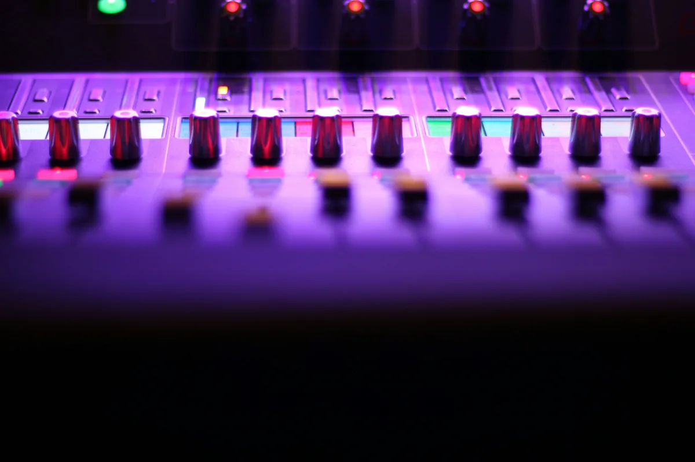

Eksportujesz utwór z DAW-a i widzisz listę formatów: WAV, AIFF, MP3, FLAC, OGG, AAC. Który wybrać? Czy to w ogóle ma znaczenie? Odpowiedź brzmi: tak - i to całkiem duże. Wybór formatu wpływa na jakość dźwięku, rozmiar pliku i na to, czy możesz dalej edytować nagranie bez strat. Ten artykuł tłumaczy różnice między najpopularniejszymi formatami i mówi wprost, którego używać w jakiej sytuacji.
Bezstratne i stratne - najważniejszy podział
Zanim przejdziemy do konkretnych formatów, warto zrozumieć jeden podstawowy podział: formaty bezstratne i stratne. To rozróżnienie jest ważniejsze niż sama nazwa formatu.
Format bezstratny (lossless) zapisuje dźwięk bez żadnych modyfikacji - każdy bit oryginalnego nagrania jest zachowany. Możesz taki plik otworzyć, zamknąć i otworzyć ponownie sto razy - dźwięk będzie identyczny jak na początku. Przykłady: WAV, AIFF, FLAC.
Format stratny (lossy) kompresuje plik przez usunięcie części danych, których ludzkie ucho - według algorytmu - "i tak nie słyszy". Efektem jest znacznie mniejszy plik, ale za cenę pewnej utraty jakości. Co ważne - tej jakości nie można odzyskać. Przykłady: MP3, AAC, OGG.
Reguła praktyczna jest prosta: do pracy w studiu i archiwizowania zawsze bezstratne. Do dystrybucji, streamingu i wysyłania znajomym - stratne jest w porządku, jeśli masz dobry oryginał.
WAV - roboczy standard branży
WAV (Waveform Audio File Format) to format opracowany przez Microsoft i IBM w 1991 roku. Przez ponad trzy dekady pozostaje absolutnym standardem w pracy studyjnej - i z bardzo dobrego powodu. WAV jest bezstratny, szeroko obsługiwany przez każde oprogramowanie do audio jakie możesz spotkać, i nie wprowadza żadnego opóźnienia przy kompresji czy dekompresji. Otwierasz plik, słyszysz dźwięk - bez żadnego pośrednictwa.
Wady WAV to przede wszystkim rozmiar. Plik WAV 24-bitowy, 48 kHz, stereo waży ok. 17 MB na minutę nagrania. Przy wielościeżkowych sesjach nagraniowych rozmiary projektów szybko sięgają dziesiątek gigabajtów. Drugi minus to brak obsługi metadanych - WAV nie przechowuje informacji o artyście, albumie czy okładce tak dobrze jak nowsze formaty.
Kiedy używać WAV: nagrywanie, miks, mastering, eksport finalny do dystrybucji (serwisy takie jak DistroKid czy TuneCore przyjmują WAV jako preferowany format), archiwizacja projektów.
AIFF - odpowiednik WAV od Apple
AIFF (Audio Interchange File Format) to w zasadzie odpowiednik WAV stworzony przez Apple. Jakościowo identyczny - bezstratny, nieskompresowany, taka sama jakość dźwięku. Różnica jest głównie historyczna i ekosystemowa: AIFF był przez lata preferowanym formatem w Logic Pro i na macOS, WAV dominuje na Windows i w reszcie świata.
Dziś oba formaty obsługuje każde poważne oprogramowanie audio i różnica między nimi w codziennej pracy jest minimalna. Jeśli pracujesz na Macu z Logic Pro, możesz natknąć się na AIFF częściej. Na Windows praktycznie zawsze WAV. Jeśli ktoś pyta "co eksportować" - WAV jest bezpieczniejszym wyborem ze względu na powszechniejszą obsługę.
FLAC - bezstratna kompresja dla archiwum i słuchaczy
FLAC (Free Lossless Audio Codec) to format bezstratny, ale - w odróżnieniu od WAV - skompresowany. Algorytm kompresji redukuje rozmiar pliku o ok. 40-60% bez żadnej utraty jakości. Plik FLAC i plik WAV z tego samego nagrania brzmią identycznie - FLAC zajmuje po prostu mniej miejsca.
FLAC obsługuje też metadane: możesz zapisać w nim informacje o artyście, albumie, roku wydania, okładkę. To czyni go popularnym formatem wśród audiofili do przechowywania kolekcji muzycznych wysokiej jakości.
Wady FLAC: nie jest obsługiwany przez wszystkie programy do audio (Logic Pro go nie obsługuje natywnie, iTunes/Apple Music też nie). W profesjonalnej pracy studyjnej WAV jest wciąż bezpieczniejszy. FLAC to dobry wybór do archiwizacji gotowych masterów i do dystrybucji bezstratnych wersji dla fanów - nie do codziennej pracy w DAW.
MP3 - standard dystrybucji przez dekady
MP3 (MPEG-1 Audio Layer III) to format, który zrewolucjonizował dystrybucję muzyki w latach 90. i 2000. Jest stratny - algorytm usuwa te składowe dźwięku, które model psychoakustyczny uznaje za niesłyszalne: bardzo wysokie częstotliwości, ciche dźwięki maskowane przez głośniejsze, pewne informacje przestrzenne stereo.
Jakość MP3 zależy od bitrate - liczby kilobitów danych na sekundę. Im wyższy bitrate, tym więcej danych zachowanych, tym lepsza jakość i większy plik:
- 128 kbps - niska jakość, wyraźne artefakty kompresji przy uważnym słuchaniu. Nieakceptowalne w 2026 roku do czegokolwiek poważnego.
- 192 kbps - przyzwoita jakość do słuchania casualowego, ale wciąż słyszalne straty na dobrym sprzęcie.
- 320 kbps - najwyższy standardowy bitrate MP3. Różnica względem bezstratnego oryginału jest dla większości słuchaczy na większości sprzętów niesłyszalna.
- VBR (Variable Bit Rate) - zmienny bitrate, który automatycznie dostosowuje jakość do złożoności sygnału. Często lepszy stosunek jakości do rozmiaru niż stały bitrate.
Kiedy używać MP3: wysyłanie demo do wytwórni lub znajomych, sytuacje gdzie rozmiar pliku ma znaczenie, starsze urządzenia które nie obsługują nowszych formatów. Do profesjonalnej dystrybucji na platformy streamingowe MP3 jest akceptowany, ale WAV jest zawsze lepszym wyborem jeśli masz możliwość.
AAC - następca MP3, którego używasz częściej niż myślisz
AAC (Advanced Audio Coding) to format stratny opracowany jako następca MP3 - przy tym samym rozmiarze pliku oferuje lepszą jakość dźwięku, szczególnie przy niższych bitrate. To domyślny format Apple Music, YouTube, a także iTunes Store.
Jeśli słuchasz muzyki na iPhonie przez Apple Music albo oglądasz filmy na YouTube - słyszysz AAC. Format jest też używany w strumieniowaniu wideo jako ścieżka audio. Przy bitrate 256 kbps AAC brzmi na tyle dobrze, że Apple przez lata sprzedawało pliki w tym formacie jako "jakość bezstratna" - co było nieprecyzyjne, ale pokazuje jak wysoka jest poprzeczka przy dobrej implementacji AAC.
W pracy produkcyjnej AAC pojawia się rzadziej niż WAV czy MP3, ale warto znać format jeśli tworzysz muzykę do filmów, reklam lub gier.
OGG Vorbis - otwarty format dla gier i streamingu
OGG Vorbis to otwarty (wolny od patentów) format stratny, alternatywa dla MP3 i AAC. Jakościowo porównywalny z AAC przy podobnych bitrate. Przez lata był preferowanym formatem Spotify (platforma przeniosła się później na AAC) i jest szeroko stosowany w grach video jako format muzyki i efektów dźwiękowych.
Dla większości producentów muzycznych OGG to format poboczny - możesz się na niego natknąć eksportując muzykę do gry lub pracując z silnikami takimi jak Unity czy Godot. W standardowym workflow produkcyjnym i dystrybucyjnym praktycznie nie będziesz go potrzebować.
Sample rate i głębia bitowa - co oznaczają te liczby
Przy wyborze formatu bezstratnego (WAV, AIFF, FLAC) napotkasz dwa dodatkowe parametry: sample rate (częstotliwość próbkowania) i bit depth (głębia bitowa). Warto rozumieć co oznaczają, bo mylenie ich to częste źródło błędów przy eksporcie.
Sample rate określa, ile razy na sekundę dźwięk jest "próbkowany" - czyli mierzony i zapisywany. Standardowe wartości to:
- 44 100 Hz (44,1 kHz) - standard CD audio. Wystarczy do odtworzenia pełnego zakresu słyszalnego przez człowieka (do ok. 20 kHz) z pewnym zapasem wynikającym z twierdzenia Nyquista. Dobry wybór do finalnego eksportu muzyki przeznaczonej dla słuchaczy.
- 48 000 Hz (48 kHz) - standard audio w wideo (film, telewizja, YouTube). Jeśli tworzysz muzykę do obrazu, pracuj w 48 kHz od początku.
- 88 200 / 96 000 Hz - wyższe sample rate używane przy nagrywaniu i masteringu. Dają więcej przestrzeni dla procesorów cyfrowych (szczególnie przy mocnym przetwarzaniu), ale pliki są dwa razy większe. Finalny eksport dla słuchaczy i tak zwykle ląduje w 44,1 lub 48 kHz.
Bit depth określa rozdzielczość dynamiczną - ile poziomów głośności może być zapisanych. Każdy dodatkowy bit to ok. 6 dB zakresu dynamiki:
- 16 bit - standard CD, zakres dynamiki ok. 96 dB. Wystarczający do odtwarzania, ale przy nagrywaniu i miksowaniu daje mało miejsca na błędy poziomów.
- 24 bit - standard pracy studyjnej, zakres dynamiki ok. 144 dB. Daje ogromny zapas przy gain stagingu - możesz nagrywać ciszej i nie martwić się szumem kwantyzacji. Używaj 24 bit przez całą pracę produkcyjną.
- 32 bit float - format wewnętrzny wielu DAW-ów, praktycznie nieograniczony zakres. Nie nadaje się do dystrybucji, ale świetny do pracy wewnątrz projektu.
Czym jest dithering i kiedy go stosować
Dithering to temat, który pojawia się przy eksporcie i bywa źródłem zamieszania. Wyjaśnienie jest prostsze niż się wydaje.
Gdy redukujesz głębię bitową - np. eksportujesz plik z 24 bit do 16 bit na CD - odcinasz część informacji o dynamice. W miejscach, gdzie sygnał jest bardzo cichy (np. wybrzmiewające reverby, ciche fragmenty), ta utrata danych może słyszeć się jako specyficzny, metaliczny szum kwantyzacji.
Dithering polega na dodaniu do sygnału bardzo cichego, kontrolowanego szumu przed obcięciem bitów. Paradoksalnie - ten celowo dodany szum "zamaskuje" znacznie nieprzyjemniejszy szum kwantyzacji. Efektem jest cichsze, bardziej naturalne wybrzmiewanie.
Kiedy stosować dithering: zawsze gdy redukujesz głębię bitową (24 bit → 16 bit). Nigdy gdy zostajesz w tej samej głębi (24 bit → 24 bit) lub gdy eksportujesz do formatu stratnego (MP3, AAC) - te formaty i tak radykalnie przetwarzają sygnał, dithering nie ma tam sensu. Dithering dodaje się jako ostatni proces w łańcuchu masteringu - po nim nie powinno już być żadnych innych wtyczek.
Który format wybrać - praktyczne podsumowanie
Żeby nie zgubić się w opcjach, poniżej konkretne odpowiedzi na konkretne sytuacje:

- Nagrywanie i praca w DAW - WAV, 24 bit, 44,1 kHz (lub 48 kHz jeśli projekt jest do wideo). Zawsze bezstratny, zawsze 24 bit.
- Eksport do masteringu - WAV, 24 bit, bez ditheringu, bez limitera na masterze (chyba że mastering engineer prosi inaczej).
- Finalny master do dystrybucji cyfrowej - WAV, 16 bit z ditheringiem lub 24 bit (większość platform akceptuje oba). 44,1 kHz dla muzyki, 48 kHz dla muzyki do wideo.
- Archiwizacja gotowego mastera - WAV 24 bit lub FLAC 24 bit jeśli zależy ci na mniejszym rozmiarze przy zachowanej jakości.
- Wysyłanie demo lub pliku znajomemu - MP3 320 kbps lub AAC 256 kbps. Wystarczająca jakość, rozsądny rozmiar.
- Muzyka do gry lub aplikacji - sprawdź wymagania silnika. Unity i Godot preferują OGG lub WAV. Do YouTube eksportuj WAV i pozwól platformie samej skompresować do AAC.
Najczęstsze pytania (FAQ)
Jaka jest różnica między formatem bezstratnym a stratnym?
Format bezstratny (np. WAV, FLAC) zachowuje wszystkie dane oryginalnego nagrania - plik brzmi identycznie jak oryginał niezależnie od tego ile razy go otworzysz. Format stratny (np. MP3, AAC) kompresuje plik przez usunięcie części danych uznanych za niesłyszalne, co zmniejsza rozmiar pliku, ale powoduje nieodwracalną utratę jakości. Do pracy studyjnej zawsze bezstratny - do dystrybucji i wysyłania plików stratny jest akceptowalny.
Czy MP3 320 kbps brzmi tak samo jak WAV?
Dla większości słuchaczy na większości sprzętów różnica między MP3 320 kbps a WAV jest praktycznie niesłyszalna. Jednak MP3 to wciąż format stratny - część danych została nieodwracalnie usunięta. Problem pojawia się przy dalszym przetwarzaniu: jeśli wyeksportujesz miks do MP3, a potem go ponownie skompresujesz, straty się kumulują. Do pracy w studiu i archiwizacji zawsze WAV. MP3 320 kbps zostawiaj na wysyłkę dem i casual odsłuch.
Jaki sample rate wybrać - 44,1 kHz czy 48 kHz?
Zależy od przeznaczenia projektu. Muzyka przeznaczona wyłącznie do słuchania - 44,1 kHz, czyli standard CD audio, wystarczający do odtworzenia pełnego zakresu słyszalnego. Muzyka do wideo, filmów, YouTube czy reklam - 48 kHz, bo to standard audio w produkcji wideo. Najważniejsze to podjąć decyzję na początku projektu i nie zmieniać sample rate w trakcie pracy.
Co to jest dithering i czy muszę go używać?
Dithering to dodanie bardzo cichego, kontrolowanego szumu do sygnału przy redukcji głębi bitowej - np. przy eksporcie z 24 bit do 16 bit. Paradoksalnie ten szum maskuje znacznie nieprzyjemniejszy szum kwantyzacji, który pojawia się przy obcinaniu bitów. Stosuj dithering zawsze gdy redukujesz głębię bitową. Nie stosuj go przy eksporcie do MP3 lub AAC ani gdy zostajesz w tej samej głębi bitowej. Dithering musi być ostatnim procesem w łańcuchu - po nim żadnych innych wtyczek.
W jakim formacie wysyłać muzykę na Spotify i inne platformy streamingowe?
Większość platform dystrybucyjnych (DistroKid, TuneCore, CD Baby) przyjmuje WAV jako preferowany format - 16 bit lub 24 bit, 44,1 kHz. Platformy same konwertują plik do swoich formatów strumieniowych (AAC lub OGG). Nigdy nie wysyłaj MP3 jako finalnego mastera do dystrybucji jeśli masz dostęp do oryginału WAV - tracisz jakość na starcie, zanim platforma jeszcze raz skompresuje plik.
Czym różni się FLAC od WAV?
Oba formaty są bezstratne - brzmią identycznie. Różnica polega na tym, że FLAC kompresuje dane bez utraty jakości, dzięki czemu plik jest o ok. 40-60% mniejszy niż WAV z tego samego nagrania. FLAC obsługuje też metadane (artysta, album, okładka) lepiej niż WAV. Wada FLAC to słabsza obsługa przez oprogramowanie - Logic Pro i część DAW-ów nie obsługuje go natywnie. Do pracy w studiu bezpieczniejszy jest WAV, do archiwizacji gotowych masterów FLAC jest dobrą alternatywą.